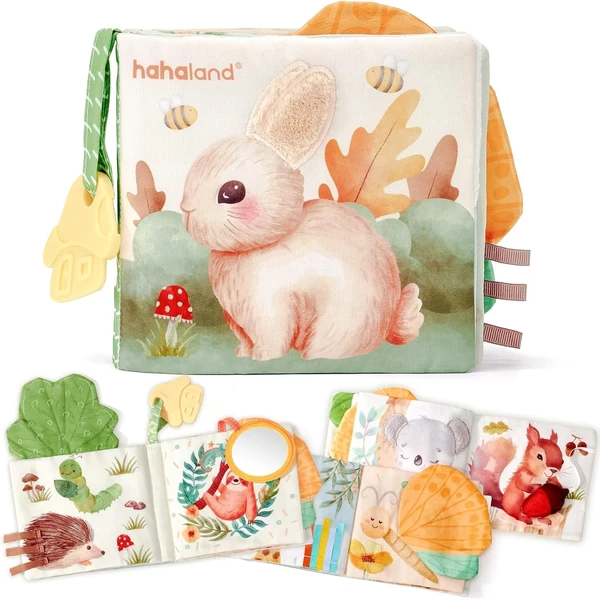
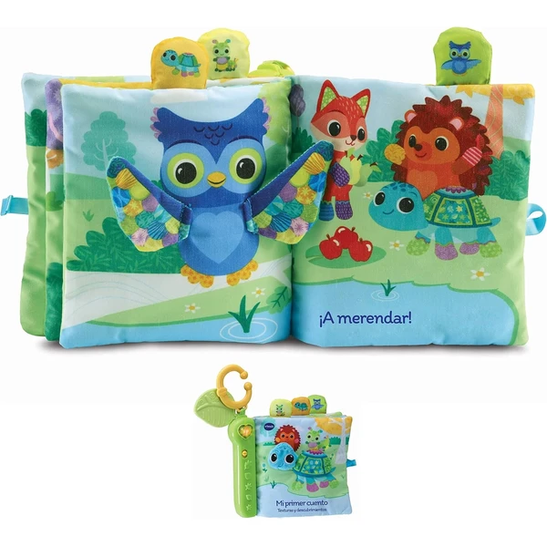
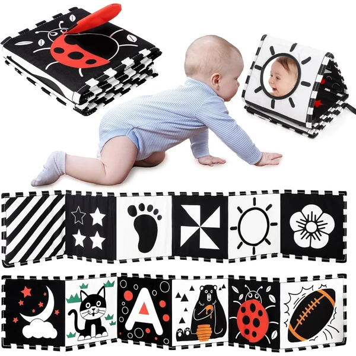
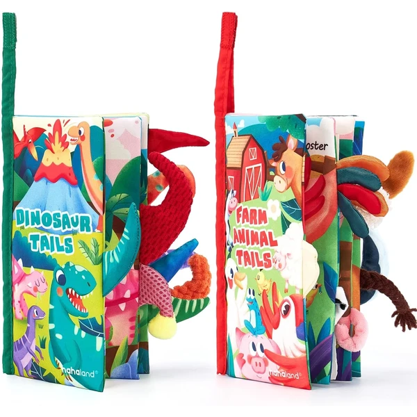
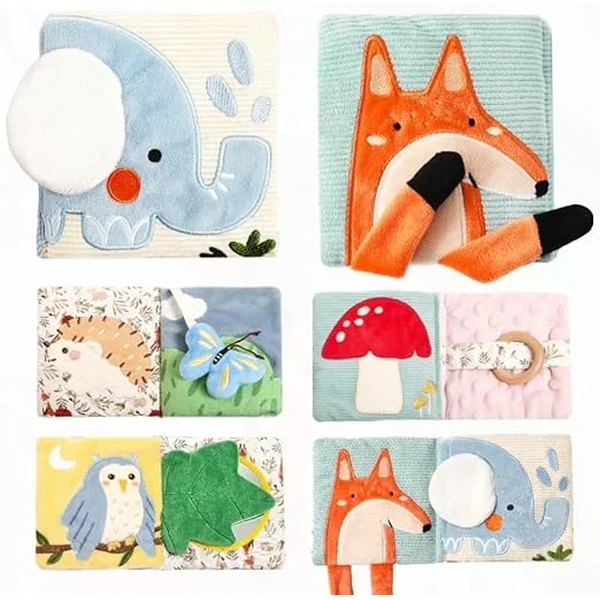

Libro de tela de animales hahaland
Un libro de tela con más de diez animales de texturas distintas y páginas que crujen al pasarlas. Incluye una correa con velcro para colgarlo del cochecito o la silla de paseo.
⭐ ¿Por qué nos gusta?
- ✔ Más de diez texturas distintas para explorar.
- ✔ Páginas que crujen y estimulan el oído.
- ✔ Correa con velcro para colgar y transportar.
💬 Lo que más destacan las familias
Muchos padres coinciden en que las texturas mantienen entretenido al bebé más tiempo que un libro normal. También gusta el sonido crujiente de las páginas, que suele llamarles la atención nada más tocarlas.
Ver en Amazon

Libro de tela Mi Primer Cuento VTech
Un libro de tela sobre el bosque y sus animales, con espejo de seguridad, mordedor de silicona y páginas crujientes. Incluye una anilla para colgarlo de la silla o el parque.
⭐ ¿Por qué nos gusta?
- ✔ Combina espejo, mordedor y texturas.
- ✔ Enseña el nombre de los animales con una historieta.
- ✔ Diseño compacto, fácil de transportar.
💬 Lo que más destacan las familias
Se repite bastante el comentario de que el mordedor incorporado viene genial cuando empiezan a salir los primeros dientes. El espejito también triunfa, porque muchos bebés se quedan mirándose un buen rato.
Ver en Amazon

Libro de tela de alto contraste URMYWO
Un libro de tela suave con ilustraciones en blanco y negro y un espejo de seguridad, pensado para los primeros meses. Ayuda a estimular la vista del bebé cuando todavía distingue mejor el alto contraste que los colores.
⭐ ¿Por qué nos gusta?
- ✔ Estimula la vista en las primeras semanas de vida.
- ✔ Incluye espejo de seguridad y páginas crujientes.
- ✔ Tela lavable y resistente a mordiscos.
💬 Lo que más destacan las familias
Entre los comentarios más habituales aparece que este tipo de ilustraciones capta la atención del bebé casi de inmediato, incluso en las primeras semanas. También se agradece que sea cómodo de sujetar durante los ratos boca abajo.
Ver en Amazon

Pack 2 libros de tela hahaland
Dos libros de tela con colas de animales en 3D y hasta 17 texturas distintas, con páginas que crujen al pasarlas. Incluyen correa colgante para el cochecito o la cuna.
⭐ ¿Por qué nos gusta?
- ✔ Dos libros con 17 texturas distintas.
- ✔ Páginas que crujen y estimulan el oído.
- ✔ Correa colgante incluida.
💬 Lo que más destacan las familias
Quienes lo han probado destacan que tener dos libros distintos ayuda mucho a variar el juego cuando el bebé se aburre rápido de uno solo. Las colas en 3D también suelen ser el detalle que más engancha, porque invitan a tirar de ellas y tocarlas.
Ver en Amazon

Libro de tela colas de animales hahaland
Un libro de tela con animales de cola texturizada, pensado para acercar al bebé a la naturaleza mientras explora distintas texturas. Sus páginas crujen y chirrían al pasarlas, con colores vivos que llaman la atención.
⭐ ¿Por qué nos gusta?
- ✔ Colas de animales con texturas variadas.
- ✔ Páginas que crujen y estimulan el oído.
- ✔ Fácil de colgar en el cochecito o la cuna.
💬 Lo que más destacan las familias
No es raro encontrar comentarios sobre lo mucho que gustan las colas texturizadas, que los bebés no paran de manosear. El sonido crujiente de las páginas también ayuda a que se mantengan entretenidos un buen rato.
Ver en Amazon

Libro de tela elefantes con anilla de madera
Un libro de tela con animales de distintas texturas (elefante, zorro, mariposa, tejón, búho) y un espejo integrado. Incluye una anilla de madera para fijarlo al cochecito, la trona o la zona de juego.
⭐ ¿Por qué nos gusta?
- ✔ Cinco animales con texturas y colores distintos.
- ✔ Incluye espejo para la estimulación visual.
- ✔ Anilla de madera para sujetarlo fácilmente.
💬 Lo que más destacan las familias
Un detalle que aparece una y otra vez es lo mucho que llama la atención el espejito integrado, que suele ser el favorito de los peques. La variedad de texturas también se valora, porque da pie a explorar cada página de forma distinta.
Ver en Amazon